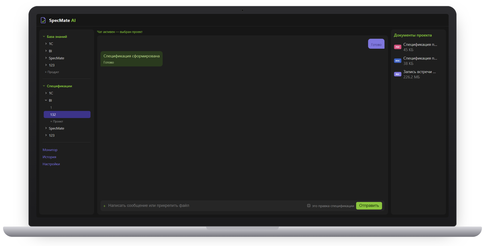
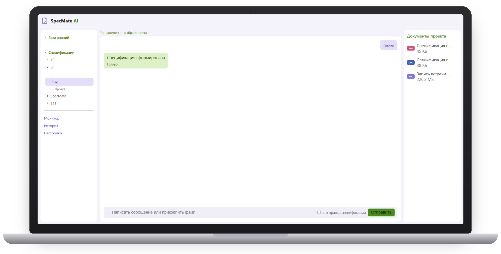
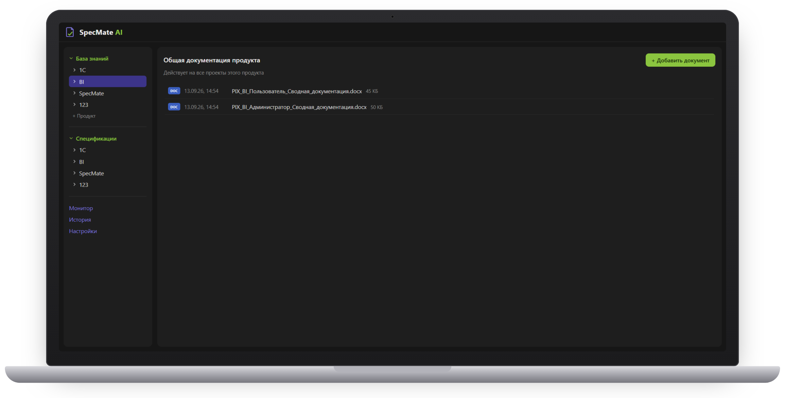
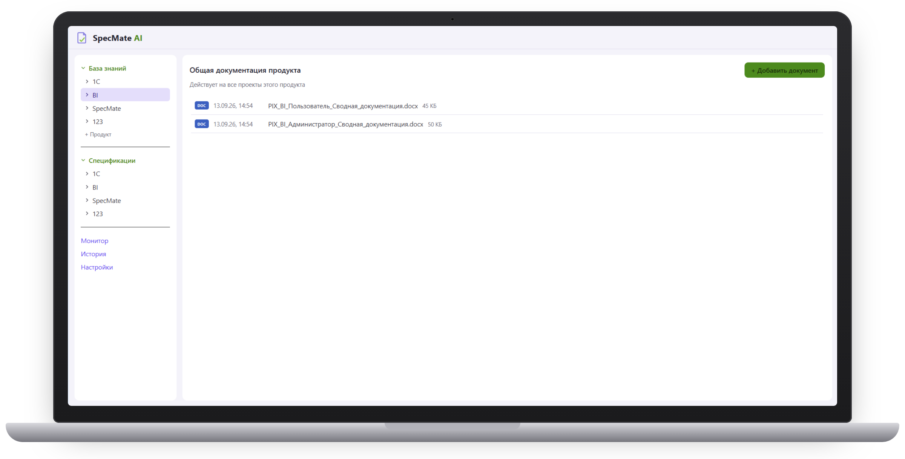

Техническое задание — сразу после встречи с клиентом
SpecMate AI обрабатывает запись встречи и заметки менеджера и формирует техническое задание, риски с обоснованием, дорожную карту и предварительную оценку стоимости — с опорой на базу знаний вашей компании.


После каждой встречи с клиентом — часы ручной работы
Менеджер или аналитик пересматривает запись и заметки, чтобы сформулировать требования.
Риски и технические ограничения оцениваются по опыту конкретного сотрудника, без системной сверки с базой знаний.
Без структурированного подхода оценка сроков и стоимости часто занижена или завышена.
Нет единого стандарта: качество и полнота документа зависят от того, кто его писал.
От записи встречи до готового документа
Аудио- или видеозапись встречи с клиентом и текстовые заметки менеджера.
Речь переводится в текст, реплики разделяются по участникам разговора.
Требования сверяются с документацией ПО, техническими ограничениями и прошлыми ТЗ компании.
ТЗ, риски, дорожная карта и оценка стоимости — в формате Word и PDF.
Документ для согласования и передачи в разработку


Данные клиентов остаются внутри компании
Обработка без обращения к внешним облачным API.
Устанавливается на ноутбук среднего класса, а не только на выделенный сервер.
Документы Word, PDF и TXT привязываются к продукту и доступны всем его проектам.
Документ по шаблону вашей компании — одной структуры независимо от автора.
При повторных встречах по проекту агент обновляет действующую версию документа, а не переобрабатывает всю историю.
Обоснования каждого пункта доступны в логах и не засоряют сам документ.
Не только транскрибация
| Задача | Otter.ai, Fireflies.ai, MeetGeek, mymeet.ai | SpecMate AI |
|---|---|---|
| Транскрибация и заметки | Да | Да, с разделением по участникам |
| Сверка с базой знаний компании | — | Да |
| Генерация ТЗ | — | Да |
| Риски с обоснованием и ссылкой на источник | — | Да |
| Дорожная карта и сроки | — | Да |
Для команд, которые превращают встречи с клиентами в проекты
IT- и системные интеграторы: внедрение 1С, CRM, ERP. Быстро и точно превратить итоги встречи в согласованное ТЗ.
Аутсорс- и аутстафф-разработка. Заранее видеть обоснованные риски и реалистичный роадмап.
Digital- и консалтинговые агентства, внутренние PMO. Единый стандарт ТЗ во всей команде.
Автор идеи и руководитель проекта, бизнес-аналитик и разработчик: архитектура решения, LLM-пайплайны, интеграции, промпт-инжиниринг.
Частые вопросы о SpecMate AI
Что такое SpecMate AI?
SpecMate AI — локальный AI-агент, который по записи встречи с клиентом готовит техническое задание, перечень рисков с обоснованием, дорожную карту проекта и предварительную оценку стоимости.
Агент опирается на базу знаний вашей компании: документацию продуктов, технические ограничения и прошлые ТЗ. Работает на ноутбуке или сервере компании, без облачных сервисов.
Как составить техническое задание по записи встречи с клиентом с помощью ИИ?
В SpecMate AI это четыре шага. Вы загружаете аудио- или видеозапись встречи и заметки менеджера. Агент расшифровывает речь и разделяет реплики по участникам, сверяет требования с базой знаний компании и формирует ТЗ, риски, дорожную карту и оценку стоимости в формате Word и PDF.
Аналитику остаётся проверить и доработать готовый черновик.
Сколько времени занимает обработка встречи?
Запись встречи на 19 минут превращается в готовый комплект документов за 2–3 минуты, если база знаний уже заполнена. Для часовой встречи, по нашей оценке, — до 10 минут.
Замеры сделаны на ноутбуке с видеокартой NVIDIA RTX 5050 (8 ГБ видеопамяти), процессором AMD Ryzen 7 и 16 ГБ оперативной памяти.
Чем SpecMate AI отличается от сервисов протоколов встреч?
Сервисы вроде mymeet.ai, MeetScribe, Fireflies.ai и Otter.ai расшифровывают встречу и делают протокол: итоги, договорённости, задачи.
SpecMate AI превращает встречу в проектные документы: техническое задание, риски со ссылкой на источник, дорожную карту и оценку стоимости. Требования при этом сверяются с базой знаний вашей компании, а вся обработка идёт локально.
Уходят ли записи встреч и документы в облако?
Нет. Распознавание речи, анализ и генерация документов выполняются локально, без облачных сервисов и сторонних AI-API.
После внедрения SpecMate AI работает на вашем оборудовании, и записи встреч, база знаний и готовые документы не покидают ваш контур. Во время пилота записи обрабатываются на нашем оборудовании по NDA — тоже без облака — и удаляются по окончании пилота.
Какое оборудование нужно для SpecMate AI?
SpecMate AI устанавливается на ноутбук среднего класса, выделенный сервер не обязателен. Решение разработано и проверено на ноутбуке с видеокартой NVIDIA RTX 5050 (8 ГБ видеопамяти), процессором AMD Ryzen 7 и 16 ГБ оперативной памяти.
Для пилота оборудование не нужно: обработку мы проводим на своём.
Какие данные можно загрузить в SpecMate AI?
Аудио- или видеозапись встречи с клиентом, текстовые заметки менеджера и документы базы знаний в форматах Word, PDF и TXT.
Поддерживаются аудио MP3, WAV, M4A, OGG, FLAC и видео MP4, MOV, MKV, WEBM. Ограничения на длительность записи нет. Документы базы знаний привязываются к продукту и используются во всех его проектах.
Что получается на выходе?
Комплект документов по проекту: техническое задание с требованиями клиента, риски с обоснованием и ссылкой на базу знаний, дорожная карта с этапами и сроками, предварительная оценка стоимости и варианты оптимизации решения.
Документ скачивается в формате Word или PDF. Обоснования каждого пункта сохраняются в логах и не засоряют сам документ.
Можно ли использовать собственный шаблон ТЗ компании?
Да. Шаблон спецификации загружается в базу знаний, и агент формирует документы по проекту по этой структуре.
Так все ТЗ соответствуют стандарту компании независимо от того, кто проводил встречу.
Может ли ИИ написать ТЗ без участия аналитика?
SpecMate AI готовит полноценный черновик, но решение остаётся за человеком: аналитик или presale-менеджер проверяет документ, уточняет спорные места и согласует его с клиентом.
Агент снимает рутину — разбор записи, структурирование требований, первичную оценку рисков — и делает ТЗ единообразными независимо от автора.
Что происходит, если по проекту было несколько встреч?
Агент работает инкрементально: после новой встречи он обновляет действующую версию документа, а не обрабатывает всю историю заново.
В проект можно добавить новую запись или дополнить его текстом.
Кому подходит SpecMate AI?
Командам, которые превращают встречи с клиентами в проекты: presale-менеджерам и бизнес-аналитикам IT-интеграторов (внедрение 1С, CRM, ERP), project- и delivery-менеджерам аутсорс-разработки, руководителям digital- и консалтинговых агентств и внутренних PMO.
На каком языке должны проходить встречи?
Сейчас SpecMate AI работает со встречами на русском языке.
Как попробовать SpecMate AI?
Мы набираем пилотные компании. Пилот бесплатный: мы настраиваем SpecMate AI под ваши продукты и процессы на ваших реальных данных и показываем результат.
Подписываем NDA, вы передаёте до 5 записей встреч с клиентами и документы для базы знаний: документацию продуктов, шаблон ТЗ, примеры прошлых ТЗ. Мы обрабатываем их на своём оборудовании без облака, адаптируем SpecMate AI под ваши задачи и проводим демонстрацию готовых документов у вас в офисе или онлайн. В обмен просим отзыв и разрешение упоминать компанию как пилотную. Заявку можно оставить в Telegram: @sherbakov_Ilya.
Сколько стоит SpecMate AI?
Сейчас идёт набор пилотных компаний, и пилот бесплатный. Условия коммерческого использования обсуждаем индивидуально по итогам пилота.
Обсудим ваш проект
Выберите, что вам ближе, — откроется Telegram с готовым сообщением.